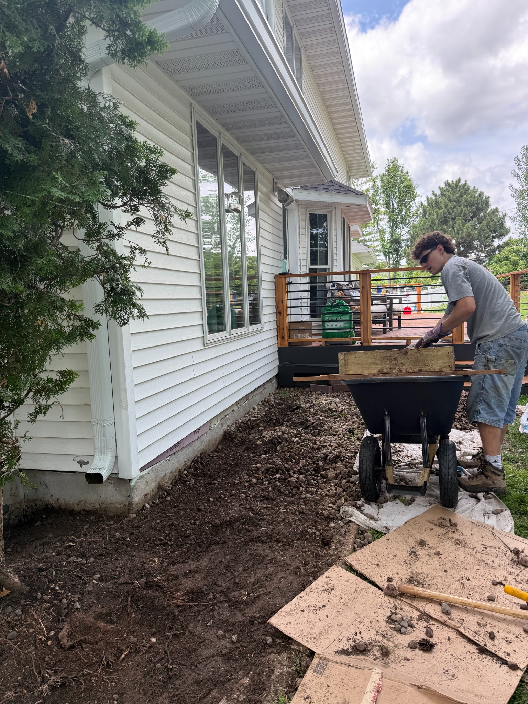
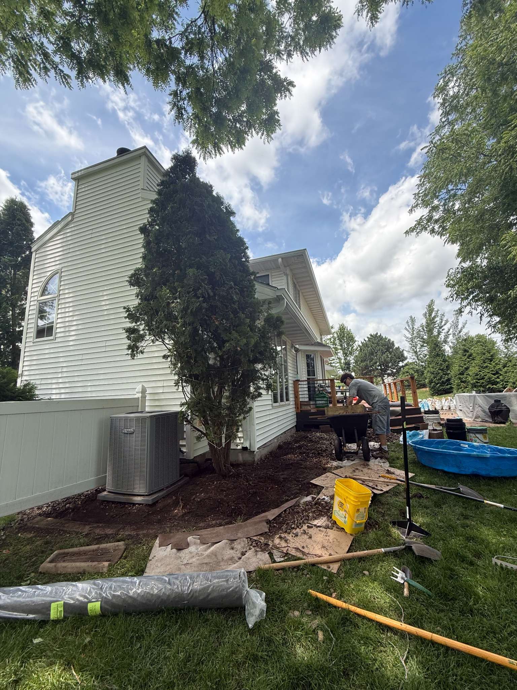
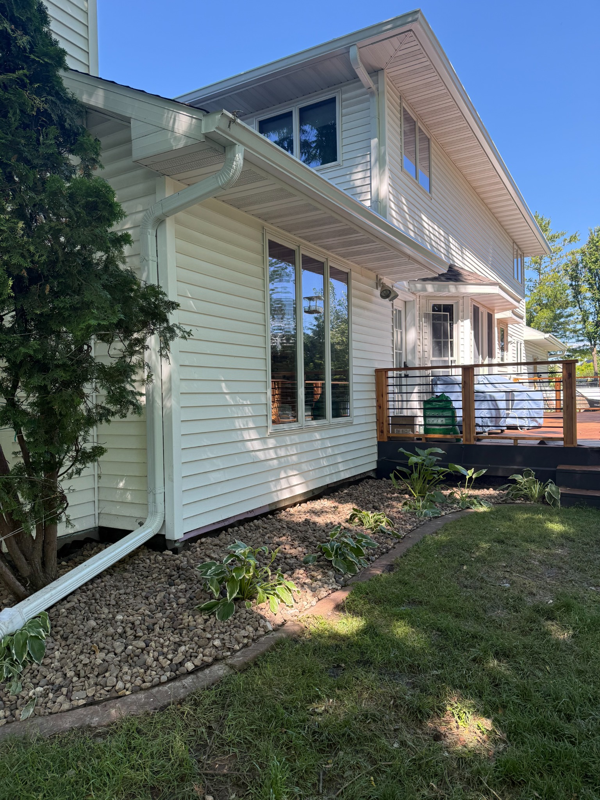

Entrepreneurial project
Snow & Jarl Landscaping LLC
Building a Local Landscaping Business
Snow & Jarl Landscaping was created as an LLC to provide dependable outdoor property services. Developing the company required turning an idea into an organized business with a clear identity, service plan, and commitment to customers.
Project Responsibilities
- Defined landscaping services and the customers the company would serve.
- Developed the Snow & Jarl Landscaping name and business identity.
- Planned equipment, materials, scheduling, and pricing needs.
- Coordinated outdoor projects and communicated expectations with customers.
- Focused on reliable work and responsible cleanup at each property.

Project Gallery


What I Learned
This project strengthened my understanding of entrepreneurship, customer relationships, physical project execution, and the importance of building a trustworthy local reputation.